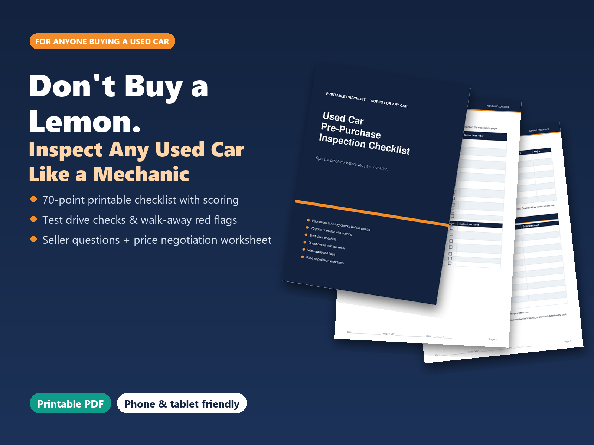

Used car test drive checklist
A test drive of 20 minutes or more, including some highway driving, reveals problems you'll never see standing in a driveway. Use these 13 checks every time, and ask to start the car cold.
| Check | What good looks like | |
|---|---|---|
| ☐ | Before you start | Check the engine is cold. Look for warning lights when you turn the key, and make sure they go out once it starts. |
| ☐ | Pulling away | It should move off smoothly with no slipping, juddering or clunks. |
| ☐ | Gear changes | Automatics: smooth changes with no flaring, slipping or harsh thumps. Manuals: no grinding, and the clutch shouldn't bite very high. |
| ☐ | Steering | Straight line on a flat road with no pulling, and no heavy knocks at full lock. |
| ☐ | Brakes | Stops straight with no pulsing, grinding or squeal. Test a firm stop where it's safe. |
| ☐ | Suspension | No clunks or rattles over speed bumps and rough roads. |
| ☐ | Highway speed | No vibration through the wheel or seat at 100 km/h. |
| ☐ | Noises | No whine, hum or drone that rises with speed (wheel bearings, differential). |
| ☐ | Engine | Smooth acceleration with no hesitation or misfire, and no smoke in the mirror. |
| ☐ | Temperature | The gauge settles in the middle and stays there. |
| ☐ | Hill start | The handbrake holds the car on a slope. |
| ☐ | Electrics | Air con blows cold. Check cruise control, indicators and the reversing camera. |
| ☐ | After the drive | Look under the car for fresh drips, smell for burning, and check for smoke at idle. |
The test drive is only one part. Paperwork, rust, leaks and crash repairs need checking too. See the 15-point used car inspection checklist.

Take the full 70-point checklist with you
The printable Used Car Pre-Purchase Inspection Checklist includes paperwork and history checks, a 63-point inspection with OK / Minor / Major ratings, a test-drive checklist, 12 questions to ask the seller, walk-away red flags and a price negotiation worksheet. It's a 7-page PDF you can print or fill in on your phone.
Get the checklist - A$9